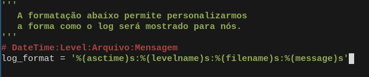
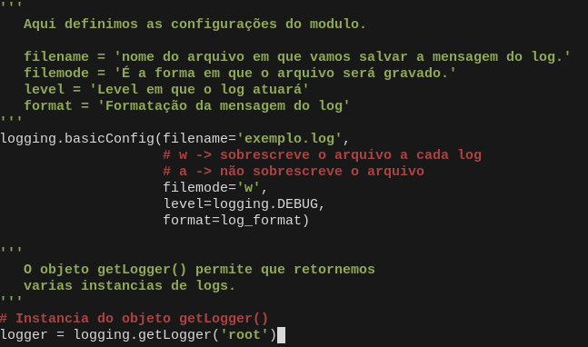
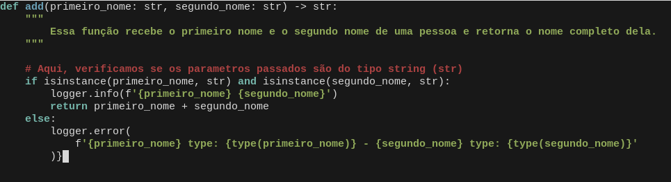
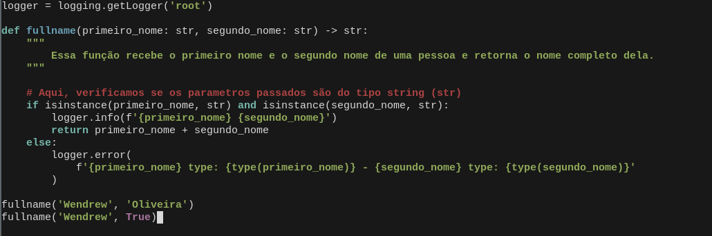

Nesse artigo, iremos trabalhar com a geração de logs em python, utilizando o módulo logging.
Retirado da documentação oficial do python: "Este módulo define funções e classes que implementam um sistema de registro de eventos flexível para aplicativos e bibliotecas."
O que a descrição acima quer dizer?
- Bem, imagine o seguinte cenário: Temos uma função que realiza retorna o nome completo de uma pessoa, os parâmetros dessa função são primeiro_nome e ultimo_nome, ambos aceitam strings como entrada, mas imagine que, por um motivo de força maior (pense nessa situação como algo para mérito de compreensão) a entrada seja do tipo booleano (True/False), nesse caso teríamos um erro e gostaríamos que o sistema reportasse essa mensagem de erro para nós. E é para isso, que temos esse módulo no python.
Vamos abordar o exemplo acima de forma prática
- Crie uma pasta para armazenar nosso codigo;
- Crie um arquivo chamado app.py.
Dentro do nosso arquivo app.py iremos importar o módulo logging:
import loggingFeito isso, iremos definir a formatação do nosso log:

Em seguida, definiremos as configurações do log e sua instancia:

O módulo contém varios tipos de niveis de mensagens:
Até aqui definimos as configurações do nosso log, agora vamos colocar isso tudo em pratica, de fato.
Vamos fazer uma função que receba o primeiro_nome e o segundo_nome de uma pessoa e retorne o log dessa função no nosso arquivo exemplo.log (definido logo acima):

Segue nosso codigo completo:

O retorno desse codigo ficará dentro do arquivo exemplo.log no mesmo caminho do arquivo app.py e terá a seguinte forma:

Esse é o modo mais convencional de retorno de mensagens aos desenvolvedores, quando o sistema ja esta em produção.